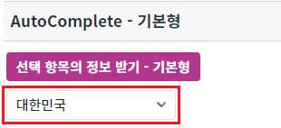
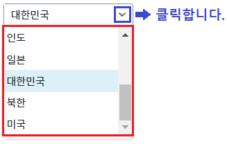
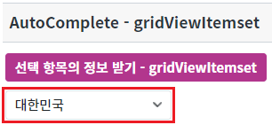
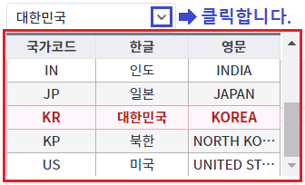

AutoComplete의 함수 'getSelectedRow'사용 예제입니다. 함수 'getSelectedRow'는 선택된 항목(Item)의 정보를 JSON 형식으로 반환합니다.
목록 구성을 'gridViewItemset'으로 설정하면 반환되는 데이터 구조가 다르므로, 로직을 작성할 때 주의가 필요합니다.
기본 유형 AutoComplete의 선택 항목 정보 받기
GridViewItemset 유형 AutoComplete의 선택 항목 정보 받기
STEP1. 초기 상태 확인하기
영역 [AutoComplete - 기본형] 아래에 구성된 AutoComplete 컴포넌트의 초기 선택 값은 '대한민국'입니다.
그림 1.브라우저(Chrome) 실행 예시

목록 확장 아이콘을 클릭하여 목록의 유형을 확인합니다. 기본 유형으로 출력됩니다.
그림 2.브라우저(Chrome) 실행 예시

STEP2. 선택된 항목의 정보 받기
버튼 선택 항목의 정보 받기 - 기본형을 클릭합니다.STEP3. 실행 결과 확인하기
선택된 항목의 'label'과 'value'에 설정된 값이 JSON 형식으로 반환됩니다.
영역 [로그 확인]에 출력된 로그를 확인합니다.
(브라우저의 개발자 도구 콘솔에도 로그가 출력되며, 반환된 객체를 확인할 수 있습니다.)로그 예시)
[16:15:23] # AutoComplete - 기본형 | 함수 getSelectedRow 호출 값
[16:15:23] {"label":"대한민국","value":"KR"}STEP1. 초기 상태 확인하기
영역 [AutoComplete - gridViewItemset] 아래에 구성된 AutoComplete 컴포넌트의 초기 선택 값은 '대한민국'입니다.
그림 3.브라우저(Chrome) 실행 예시

목록 확장 아이콘을 클릭하여 목록의 유형을 확인합니다. 목록이 'gridViewItemset' 유형으로 출력됩니다.
그림 4.브라우저(Chrome) 실행 예시

STEP2. 선택된 항목의 정보 받기
버튼 선택 항목의 정보 받기 - gridViewItemset을 클릭합니다.STEP3. 실행 결과 확인하기
선택된 항목의 GridViewItemSet 설정된 값이 JSON 형식으로 반환됩니다.
영역 [로그 확인]에 출력된 로그를 확인합니다.
(브라우저의 개발자 도구 콘솔에도 로그가 출력되며, 반환된 객체를 확인할 수 있습니다.)로그 예시)
[16:25:41] # AutoComplete - gridViewItemset | 함수 getSelectedRow 호출 값
[16:25:41] {"columnInfo":["code","title_ko","title_en"],"data":["KR","대한민국","KOREA"]}원하는 시점에 컴포넌트의 함수 'getSelectedRow'를 이용하여 스크립트를 작성합니다.
[소스 코드 예시]
// 예시) AutoComplete "acb_exam1"의 선택된 항목의 정보를 반환받습니다. // 이 함수는 목록 구성 방식에 따라 반환값이 다릅니다. let jsnResult = acb_exam1.getSelectedRow(); // return 예시 1) 목록 유형이 기본형(itemSet)으로 설정. // {"label":"대한민국","value":"KR"} // return 예시 2) 목록 유형이 'gridViewItemset'으로 설정. // {"columnInfo":["code","title_ko","title_en"],"data":["KR","대한민국","KOREA"]}
getSelectedRow